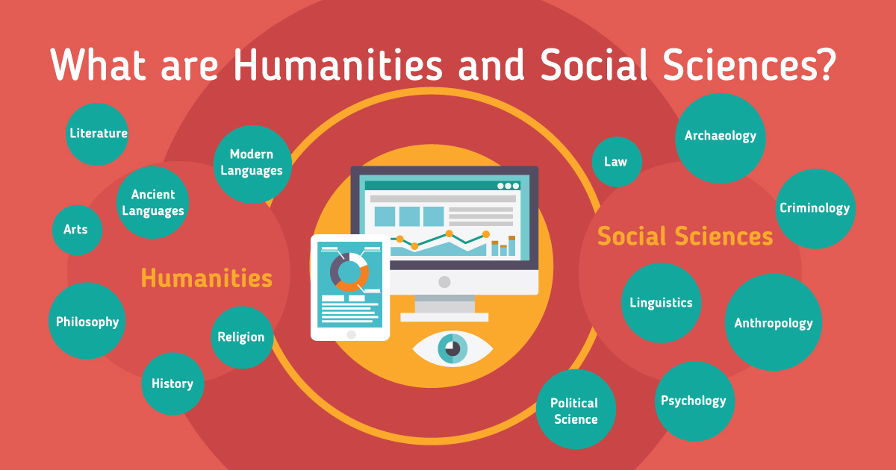
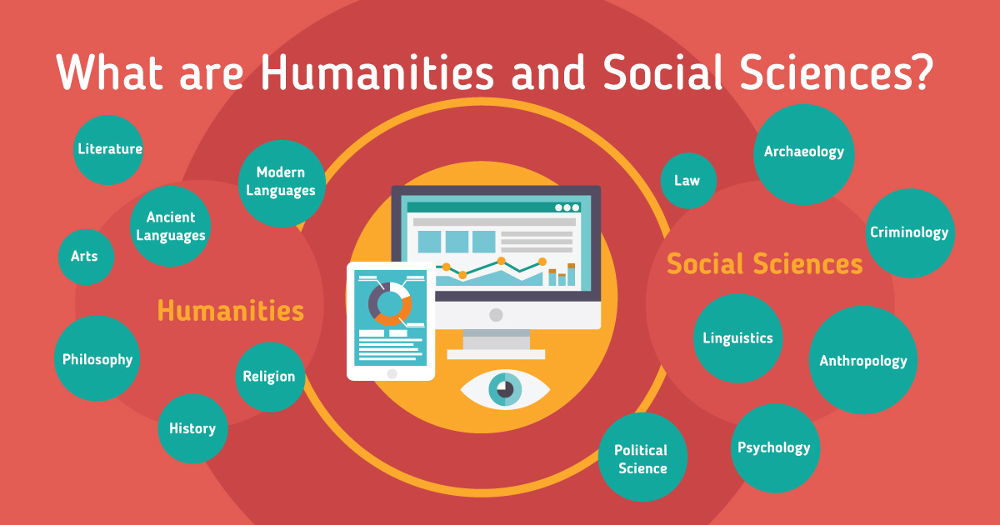

Welcome to EduTech for Sustainability
Welcome to our website dedicated to promoting quality education and sustainable development in alignment with the Sustainable Development Goals (SDGs). Our mission is to advocate for inclusive, equitable, and quality education for all, while fostering awareness and action towards sustainable development.
Education liberates the intellect, unlocks the imagination and is fundamental for self-respect. It is the key to prosperity and opens a world of opportunities, making it possible for each of us to contribute to a progressive, healthy society. Learning benefits every human being and should be available to all.
Quality education is essential for promoting environmental sustainability by increasing awareness, fostering empowerment, and promoting responsible action. Through quality education, individuals gain a deeper understanding of environmental issues such as climate change, pollution, and resource depletion. This awareness empowers them to take informed and responsible actions to protect and conserve the environment. Additionally, quality education promotes civic engagement and advocacy for environmentally sound policies, contributing to sustainable development goals and the well-being of both people and the planet.
Information Technology (IT) plays a transformative role in enhancing educational quality by providing innovative tools, resources, and platforms for teaching and learning. IT enables access to a wealth of educational resources, personalized learning experiences, and interactive learning environments. It facilitates global collaboration, connectivity, and continuous professional development for educators. Ultimately, IT enhances educational quality by promoting access, engagement, and effectiveness in teaching and learning processes.
Basic Courses to opt
 
